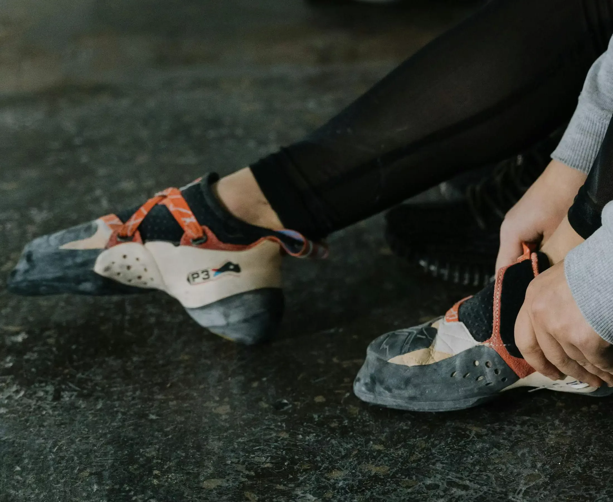

How to choose climbing shoes?
When first sarting climbing, buying the shoes is the first thing you will do, probably, and then realizing how many different shoes there are can be overwhelming. The prices vary quite much, but the general agreement is that they are not cheap, so you want to make a good decision from the beginning. Don't worry, we got you covered. In this article we are going to explain the main differences between the climbing shoes and guide you to an educated choice of shoes.
We are going to separate this into two sections: shoe features and shoe shape as we deemed these to be the most important ones when starting. If you are a more experienced climber, please write to us on the Get Help tab and we will guide you from your current needs.
Shoe features

Shoe Material
There aren't many to choose from and this feature regards stretching of the shoe.
Unlined leather is the one that stretches the most and sintetic material stretches
the least. In between there is lined leather.
Shoe closure
For these, there are also 3 options available: lace-up, strap and slip-on.
The names are pretty descriptive but what they offer vary widely.
Lace-up
offers the most versatility as you can adjust how tight or loose it sits on your feet. With that in
mind, it takes forever to pur on/take off.
Strap(the most common one) is all
about easy on and off feature, with much less feet adjustment.
Slip-on are
like very very tight socks and are great for sensibility and building stronger feet,
as they don't have stiff sole and mid-soles.
Shoe shape
Neutral Shape

The most confortable climbing shoe you will find. Your toes will sit flat inside, so you can wear them for longer periods of time without having to take them out. They usually have stiffer midsoles which provide great support but less sensitivity. Safe to say that it is the most durable one because of the extra rubber.
Moderate Shape

From here we start to have a downward curvature that puts your feet into a stronger position for harder routes. Usually more sensitive giving you more control of your feet. The curvy shape offers a lot but also takes a bit of the confort. Little less durable as the rubber gets thinner for more sensibility.
Aggressive Shape
The most curved climbing shoe, that gives you power in your toes and your heels. Excellent for small foot holds and overhang climbs as gives the most sensibility of all. As you can imagine, is the most unconfortable one as makes your feet turn in non-natural ways. It wears out the faster from all options also.